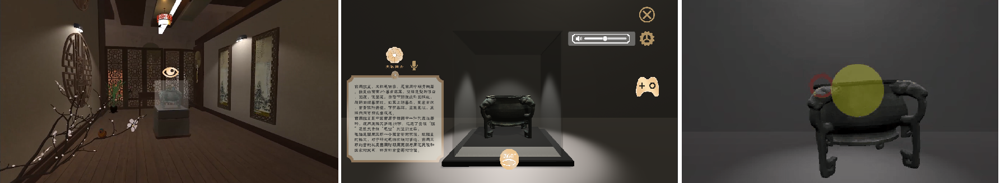
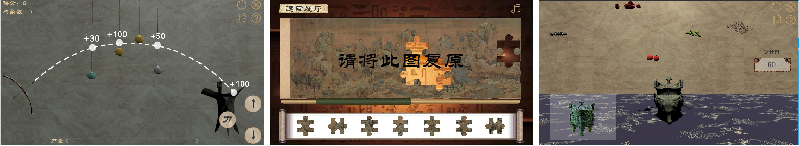

Night at the Museum
Night at the Museum is a virtual simulation project integrating guided tour and game. The visitors will be placed in a virtual scene and will tour the museum through the direction rocker and interactive buttons arranged in the scene. Each cultural relic exhibit is equipped with interactive games and corresponding detailed introduction scenes. During the tour, visitors can have a detailed understanding of the exhibits they are interested in and play related games.
We want to explore a new form of online pavilion guidance that combines elegant interactive games with virtual simulation Tours. Through interesting games, visitors can be interested in the cultural relics. Meanwhile, detailed introduction of the exhibits can also give users a deeper understanding of the cultural relics and their historical origins.
